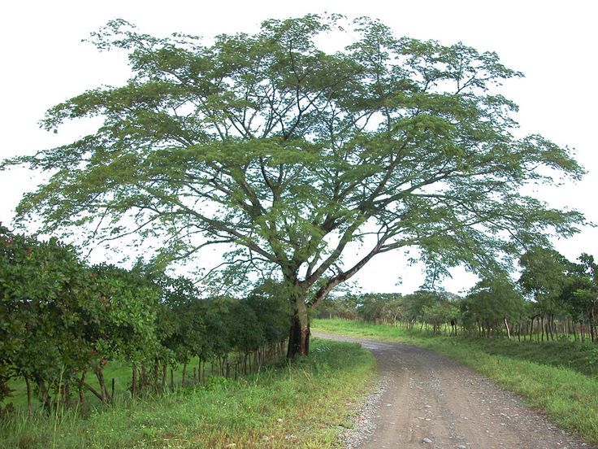

IMPLEMENTACIÓN DE UNA ESTRATEGIA DE COMUNICACIÓN PARA EL FORTALECIMIENTO
DE LA IDENTIDAD CULTURAL DE LA COMUNIDAD INDÍGENA “EL CARITO” DEL PUEBLO ZENÚ
HISTORIA DE EL CARITO
Ubicación Geográfica: El Carito, 9°3’26.32’’ – norte 75°48’18.57’’ – oeste ALTURA S.N.M. 25 mts. Temperatura media 28°c.
El Carito es un corregimiento perteneciente al municipio de Santa Cruz Lorica, este corregimiento cuenta con 4.962 habitantes, los cuales habitan en el centro poblado, localizado a 40 kilómetros al norte de Montería, capital del departamento de Córdoba, sus habitantes son descendientes de la comunidad Étnica Cenu.
La historia de El Carito, se remonta a principios del siglo XVIII, cuando los primeros 4 grupos familiares, llegaron a organizar un pequeño caserío en las estribaciones de un humedal del caño que desde Cereté baña esta hermosa región del bajo Sinú, sobre la margen derecha se asentaron tres (3) familias, que fueron; Cogollo Fuentes, Madera y la familia Páez; y en la margen izquierda la familia; Cogollo Polo, Pérez, se cree que también llegaron otras familias procedentes de la Boca de la Ceiba y de otras poblaciones o lugares vecinos, porqué las poblaciones vecinas en ese momento también se encontraban en proceso de formación. Con el pasar del tiempo fueron agrupándose las unas con las otras, formando así nuevos hogares.
En ese tiempo se arreaba ganado del Alto Sinú hasta la Bahía de Cispatá, atravesando por el pueblo de El Carito, en esa travesía del ganado que transportaban hasta la empresa denominada Pakinhouse, ubicada en Bahía de Cispatá, tenían que hacer varias estaciones, con el fin de darle reposo al ganado y lo mismo los vaqueros también descansar, porqué era muy dura la jornada, ya que se hacía por caminos de trocha y de herradura.

Una de esas estaciones se hacía en un corral ubicado al lado de la casa de los señores Cogollo Fuentes, lugar donde existía un árbol de Carito, también denominado Orejero. A raíz de eso los vaqueros de aquel entonces decían “vamos a encerrar a El Carito” y de allí surge el nombre de la población de El Carito.
Dicho árbol quedaba ubicado en la parte trasera del corral de ganado de la familia Cogollo Fuentes, donde actualmente esta la casa del señor Bonifacio Madera. Milad Issa en su libro “Viejos Cariteros” cuenta que en 1960 todavía existía el tronco seco y nudoso; y que era utilizado por las patas caseras para hacer sus nidos.
Según fechas aproximadas dadas por el señor Andrés Páez, es fácil deducir que El Carito tiene más de ciento cuarenta años. Y que anteriormente la calle principal de El Carito atravesaba la finca de Andrés Páez, Francisco Madera Cogollo, entre otros. Pero que dicha calle salía donde hoy se encuentra ubicada la Parroquia Nuestra Señora El Carmen, del municipio de Cotorra. Cuenta Andrés que la calle con la que contamos hoy día en el año 1960 aún tenia unos huecos inmensos que en el invierno la hacían bastante intransitable, pero que a pesar del poco, apoyo brindado por la alcaldía de Santa Cruz de Lorica, los habitantes de este corregimiento lograron sacar adelante las calles del pueblo, el cual hoy día es uno de los corregimientos mejores trazados en cuanto a su diseño urbanístico.
Las casas donde habitaban nuestros antepasados, eran elaboradas en techo de palma, grande o pequeña, esto dependía de la situación económica de cada quie; los horcones eran de matarratón, mora, etc. Los amarres los hacían con bejuco montañero, cercaban la casa con lata hembra, luego l acubrian con arena, boñiga de vaca y terminaban pintandola. En el año 1970 llegó la luz electrica a El Carito.